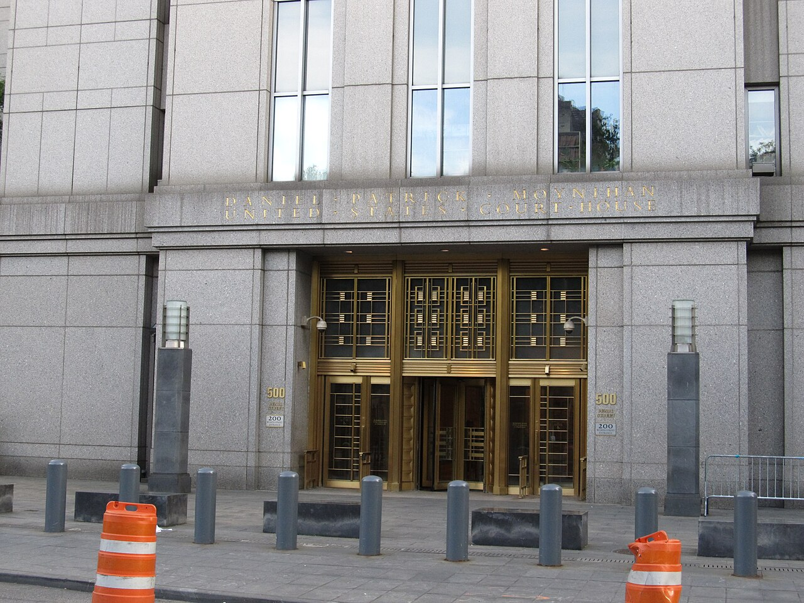

Vol. I · No. 101 · Tuesday, September 1, 2026 · 16 items · ~15 min read
Music publishers, the Strait of Hormuz and Venezuela's oil fields all pose the same question this morning, which is who may take an asset before its owner has agreed to sell it.
The Splash · Culture & EASL · San Francisco
Sony and Warner Chappell sue Anthropic over Claude's training data, and name Dario Amodei personally
The Phillip Burton Federal Building, seat of the United States District Court for the Northern District of California, where the publishers filed. — Wikimedia Commons
Sony Music Publishing and , joined by affiliated publishing entities, sued Anthropic on Friday in the United States District Court for the Northern District of California and named chief executive Dario Amodei and co-founder as individual defendants alongside the company. The 48-page complaint alleges Anthropic assembled Claude's training corpus by torrenting and scraping copyrighted works, and that the model reproduces protected lyrics verbatim when prompted. The publishers identify tens of thousands of musical compositions, among them "Eye of the Tiger," "September," "Uptown Funk," Taylor Swift's "Paper Rings" and Mariah Carey's "All I Want for Christmas Is You." They seek up to $150,000 for each work willfully infringed, up to $25,000 for each instance of copyright-management-information removal, and a jury.
"A brazen campaign of illegally torrenting, scraping, and downloading copyrighted works on a massive scale."
— The complaint, as quoted by Variety, August 29
The arithmetic is the reason to read the filing rather than the headline. Anthropic settled in the same courthouse for $1.5 billion in July, a figure that worked out to about $3,109 for each of 482,460 books. The publishers here are asking for a statutory ceiling roughly forty-eight times that number, on a corpus the company has already been made to price once. They also stack a claim under of the Digital Millennium Copyright Act, and demand rather than proving loss. Anthropic said it disagrees with the claims and intends to defend itself robustly in court.
Timing is the second thing worth noticing. The complaint landed in the same week Anthropic committed roughly $80 billion to computing capacity across two contracts and while bankers position what would be the largest listing in market history. A jury demand and two named founders are not a nuisance line item on a registration statement; they are a disclosure problem, and the publishers know it. Sony Music Publishing and Warner Chappell are also the two houses most likely to be on the other side of any eventual licensing deal, which makes the pleading a price quote as much as a grievance.
Why it mattersThe training-data question has moved from books to compositions, from corporate defendants to named individuals, and from doctrine to price. Every number in this complaint is a bid in the licensing negotiation that will follow, and the entertainment bar is where that negotiation gets run.
The World · Strait of Hormuz · cross-spectrum LLCLRR
American strikes on Larak Island draw Iranian fire at bases in Jordan and the Emirates
United States forces struck Iranian rocket launchers on over the weekend, breaking a month without direct exchanges between the two countries. American officials said Iran was preparing to fire rockets carrying sea mines into the shipping channel. Overnight into Monday the sent missiles and drones at King Hussein and Al Azraq air bases in Jordan and at Al Minhad Air Base in the United Arab Emirates. Jordan's armed forces said air defenses destroyed eight incoming missiles and reported no casualties.
Brent crude moved above $90 a barrel on the escalation. President Trump told Fox News the United States is "going to hit them hard." Reporting on the American side is less confident than the rhetoric: military leaders have advised Defense Secretary that a prolonged large-scale campaign against Iran is not sustainable alongside other commitments.
Why it mattersA fifth of the world's oil consumption transits this channel, and the threat that moves the price is mining rather than closure. Every convertible, term loan and cross-border deal signed this quarter is discounting an energy input that a single islet can reprice overnight.
Framing noteCNN and the Washington Post lead on the American strike as the act that broke "a month-long lull," placing the escalation on Washington. Fox News and the Washington Times lead on the Iranian retaliation and the mine-laying threat that preceded it, placing the escalation on Tehran. The facts reported are the same; the sequence each outlet starts from is not.
Aon agrees to buy USI Insurance from KKR for $17 billion, nine years after a $4.3 billion purchase
Aon agreed on Monday to acquire USI Insurance Services from KKR for $17 billion in cash, the largest transaction announced anywhere in the window. USI is the tenth largest American insurance broker, with about $3 billion of annual revenue, more than 10,500 employees and roughly 200 offices, run out of Valhalla, New York. KKR bought it in 2017 for $4.3 billion. The exit returns about six times the original equity and roughly 3.4 times the total capital deployed across the life of the holding, a spread that is itself the lesson: the headline multiple measures money in at signing, not money in over nine years.
The asset had been moved into , which is why a 2017 vintage was still on the books in 2026. For Aon it is the second middle-market broker roll-up in three years, after the $13 billion purchase of in 2024. These deals price on rather than underwriting risk. Closing is expected in the fourth quarter, subject to regulatory approval. The financing backdrop is not cheap: the ten-year Treasury closed Monday near 4.65 percent and the thirty-year near 5.19 percent, with two-year to ten-year spread at about 46 basis points and no coupon auction in the window.
Why it mattersAn all-cash $17 billion take-out at these funding levels is a statement about how confident a strategic buyer is in recurring revenue. It is also the cleanest available worked example of how a sponsor exit is actually measured, which is the arithmetic a first-year capital markets associate is expected to run without being asked.
Two contracts, one designation, and a very large order for desktop computers.
AI · Nueces County, Texas
Anthropic books roughly $80 billion of computing capacity inside a single week
Nvidia's Santa Clara headquarters. The chipmaker is both an investor in Lambda and, under this structure, the party holding the data-center lease. — Wikimedia Commons
Anthropic agreed to a $35 billion computing deal with , an Nvidia-backed cloud provider, according to reporting on Monday. The unusual feature is the ownership chain: Nvidia holds the data-center lease directly and installs the chips, while Lambda holds the contract without owning the underlying real estate. The site sits in Nueces County, Texas, and is being built by , a bitcoin miner that has converted its power and land holdings to artificial-intelligence hosting.
It follows a separate $45 billion, six-year agreement with Nscale announced August 26 for 460 megawatts in West Virginia, running Nvidia's parts and due online by the end of 2027. Together that is close to $80 billion of committed spend in one week, from a company that has cited degraded reliability under surging Claude demand and that is preparing a listing. The compute is the argument the roadshow will make, and it is also the liability the prospectus will have to carry.
Why it mattersLong-dated take-or-pay compute contracts are becoming the dominant balance-sheet item at the frontier labs, and nobody has settled how they should be presented. Where a lease sits, and who is counterparty to whom, is a securities disclosure question before it is an engineering one.
Brussels puts ChatGPT's search function under the Digital Services Act
The European Commission on Monday designated ChatGPT's search function a under the Digital Services Act, the first time a generative product has been placed in that category, and designated Reddit and Roblox as Very Large Online Platforms. The is arithmetic rather than judgment: ChatGPT's search averaged about 159 million monthly users in the Union over the six months to March 2026, Reddit 57.2 million and Roblox about 48 million.
The services have four months, to the end of December, to comply with systemic-risk assessment and mitigation duties covering illegal content, effects on minors, mental wellbeing, fundamental rights and electoral integrity. Supervision splits on where the European entity is domiciled: the Commission and Ireland's take ChatGPT and Reddit, while the Netherlands Authority for Consumers and Markets takes Roblox.
Why it mattersA compliance calendar with a hard December date has just been attached to the company preparing the year's other enormous listing. Risk factors written in Brussels have a way of appearing in American registration statements.
The labs are buying tens of thousands of Mac minis to teach software to use software
OpenAI has bought tens of thousands of Mac mini and Mac Studio units to generate training data for , according to reporting first carried by and syndicated widely on Monday. Anthropic is reported to be renting comparable Mac capacity through Amazon Web Services rather than buying. The constraint is not graphics processors: a has left the most powerful configurations sold out for months.
The detail worth holding is what the machines are for. A frontier training cluster learns from text; these desktops exist to record a model attempting the ordinary work of sitting at a computer, which is what most professional labor now consists of. The hardware order is a fair measure of how seriously the labs take that market, and consumer desktops purchased by the tens of thousands are not a research gesture.
Why it mattersDocument review, diligence checklists and filing mechanics are computer-use tasks before they are legal tasks. The capital being spent to generate that training data is a better forecast of where automation lands next than anything said on a panel about it.
The staff stops answering, and cooling becomes an acquisition category.
Markets · Washington
The SEC will no longer tell a company whether it may drop a shareholder proposal
The Securities and Exchange Commission headquarters. The Division of Corporation Finance has withdrawn from a review function it has performed for decades. — Wikimedia Commons
Three Jones Day partners published an account on Monday, on the Harvard Law School Forum on Corporate Governance, of the Division of Corporation Finance's exit from review. Effective August 14, the staff no longer responds to company requests for a , and it has separately stopped answering requests under subsection (i)(1), the exclusion for proposals improper under state law. Companies must still file an explanation with the Commission at least 80 calendar days before the definitive proxy goes out. They will simply not hear back.
Chair has said he regards shareholder proposals as more properly a matter of state law. Shareholder Proposal Modernization remains on the Commission's regulatory agenda, so the withdrawal is an interim staff move rather than the last word. It arrives into a thinner season: D. F. King's proxy debrief, published the same day on the same forum, counts total proposals filed in 2026 down almost a quarter from 2025 and at their lowest in a decade, with governance proposals rising while environmental, social and compensation proposals fell.
Why it mattersA decades-old free option for issuers has been withdrawn, and the exposure it absorbed now lands on outside counsel. Proxy season 2027 will be the first run without a referee, and the memoranda pricing that risk are being written this month.
SLB buys Kelvion from Apollo and Triton for $4.1 billion to sell cooling to data centers
agreed on Monday to acquire Kelvion, a German thermal-management manufacturer, from funds managed by Apollo Global Management and from Triton, for total consideration of about $4.1 billion. The split is worth reading closely: roughly $3.4 billion in cash plus assumption of about $700 million of debt, which is why the exceeds what changes hands. Kelvion is projected to turn over $2.3 billion to $2.4 billion in 2026, of which $1.2 billion to $1.3 billion comes from data centers, its largest and fastest-growing market. Closing is expected in the first half of 2027.
The strategic logic is that has become the binding constraint on artificial-intelligence buildout, ahead of chips and ahead of floor space. An oilfield services company buying a German heat-exchanger business is a bet that the next decade of thermal engineering demand comes from server halls rather than refineries.
Why it mattersThe second-order trades on the artificial-intelligence buildout are being priced now, and they are industrial rather than technological. Apollo, meanwhile, has printed two exits in three days, which says something about where sponsors think this cycle is.
A district judge holds her line, Sacramento aims at the wrong entity, and four Florida lawyers lose their licenses.
Law · Boston · cross-spectrum LLC
Talwani refuses to lift her freeze on the Postal Service mail-ballot rule, with Thursday the real date
The Moakley courthouse in Boston, seat of the District of Massachusetts, where the mail-ballot dispute has now outlasted a Supreme Court stay. — Wikimedia Commons
Judge on Monday denied motions by the Justice Department, the Postal Service and intervening state defendants to dissolve the fourteen-day restraining order she entered last week. That order blocks a new Postal Service rule requiring states to obtain agency sign-off on mail-ballot envelope designs and to upload voter data to a Postal Service portal. Her order records that the government's record "continues to lack any evidence regarding fraudulent absentee or mail-in voting."
The sequencing is the story. On August 24 the Supreme Court granted a stay six to three in , No. 26A124, letting the underlying executive order proceed across 23 states and the District of Columbia over dissents from Justices Sotomayor, Kagan and Jackson. Talwani's order runs against a different instrument, the Postal Service rule, and it has so far survived. She hears argument Thursday, September 3, on converting the restraining order into a , one day before the earliest state deadline to send military and overseas ballots.
Why it mattersA stay on the emergency docket disposes of an application, not of a program, and the same policy can be attacked again through a different agency instrument. That is the practical lesson for anyone who reads a Supreme Court order as the end of a case.
California bars investors from controlling law firms and leaves untouched the structure they actually use
Assembly Bill 2305, introduced by Assemblymember Ash Kalra in February, passed both chambers of the California legislature without an opposing vote and now sits with Governor Newsom, who has until September 30 to sign or veto. It would bar private equity firms, hedge funds and other corporate investors from exercising control over the practice of law, reinforcing the ownership wall that already draws in nearly every state.
Axios Pro Rata's reporting on Monday makes the case that the bill misses. It does not reach the , the vehicle through which capital actually buys economic exposure to a law firm, and which Colorado and Illinois have addressed with narrower statutes aimed at revenue-linked fees. The activity is not theoretical: 's legal-services transactions team is reported to have closed more than fifteen such deals in six months with roughly a hundred more in the pipeline, and Charlesbank Capital Partners is reported to be negotiating an investment in the California litigation firm WSHB through exactly this structure while the bill was moving.
Why it mattersThe economics of the profession are being restructured through an entity nobody legislated about, and California just proved a legislature can pass a unanimous bill against a practice without touching it. Anyone who intends to practice for thirty years should understand who will own the platform.
Florida's September discipline list disbars four, and two of them over the affidavit rather than the conduct
published its September 1 discipline report, covering Supreme Court orders entered across July. Four lawyers were disbarred, five suspended and one publicly reprimanded. The pattern in the disbarments is worth a Miami student's attention, because two of the four turn on rather than on the underlying misconduct: Claudia M. E. Atkinson of Fort Myers, disbarred by order of July 23 in case SC2026-0234, and Paige Sundance Mincieli of Cape Coral, disbarred July 17 in SC2026-0431 after practicing while suspended, were both held in contempt for failing to file the affidavit notifying clients and courts of an existing suspension.
The other two are ordinary in their causes and severe in their outcome. Mariano Ramon Gonzalez, Jr. of Sunrise was disbarred July 2 in SC2025-1700 for letting a client's insurance claim be dismissed without telling the client and then not answering Bar inquiries. Marsha Sharlene Johnson was disbarred July 9 in SC2025-1843 for claiming a bankruptcy filing to stay a contempt hearing and separately borrowing $16,000 from a client whose will she drafted without sending her to independent counsel. Christopher D. Butler drew an immediate on July 8 after pleading guilty to two counts of sexual battery.
Why it mattersHalf of a month's disbarments in this state came from failing to file a form after a sanction had already landed. The compliance step that follows discipline is where careers actually end, and it is the part nobody teaches.
A hundred-year concession, a toll still climbing, and a criminal case opened against one's own side.
The World · Caracas · cross-spectrum LLCR
Washington takes 55 percent of a venture over 65 billion barrels of Venezuelan oil on a hundred-year concession
The Amuay refining complex on the Paraguana peninsula, part of the downstream system the new venture's output would feed. — Wikimedia Commons
Under an arrangement President Trump announced on Friday and that was still being priced apart on Monday, the United States holds a 55 percent interest in a new private joint venture formed to develop seventeen Venezuelan oil fields holding a proven potential of 65 billion barrels, under a hundred-year concession granted by acting president . Secretary of State Marco Rubio and Defense Secretary Pete Hegseth negotiated it; the Venezuelan businessman Alejandro Betancourt, through North American Blue Energy Partners, fronted the private side. Trump called it the biggest oil deal in world history and said it comes at no cost to the American taxpayer, with the crude earmarked in part for the . Projections attached to the announcement put investment at about $100 billion and Venezuelan tax receipts at more than $209 billion over the life of the arrangement.
The structure is the interesting part and the reason it is a capital markets story rather than only a foreign policy one. Majority control of a private venture's output is not the same instrument as expropriation, and the choice appears deliberate: a leaves title with the state while moving the economics, which keeps the transaction out of the arbitration architecture that governs seizures. Bloomberg's account on Monday put the unanswered question plainly, which is who funds the $100 billion. House Oversight Democrats, led by ranking member Robert Garcia, have opened an inquiry into administration communications with oil companies.
Why it mattersSovereign concession structuring is a live practice area again after twenty quiet years, and this is the largest instance anyone will see. The financing question Bloomberg raises is the one a capital markets desk gets paid to answer.
Framing noteFox News and the Washington Examiner run it as an achievement, leading on the barrel count and on gasoline prices. Bloomberg's headline is that the deal "leaves $100 billion question unanswered," and House Oversight Democrats frame the same transaction as an accountability problem. Nobody disputes the terms; the disagreement is entirely about whether they are deliverable.
The Nepal and Tibet flood toll passes 950, and the rebuild is priced at a tenth of Nepal's economy
Nepali and Chinese officials put the death toll from the Himalayan flooding at at least 955 on Monday, with more than 4,400 people still missing. Nepal's National Disaster Management Authority reports 939 bodies recovered on its side; reports sixteen confirmed dead in Tibet with 546 missing there. The trigger was a near the border that sent a surge down the river systems.
Finance Minister Swarnim Wagle has put reconstruction at $4 billion to $5 billion, roughly a tenth of national output. The United Nations estimates about 65,000 people need emergency water and sanitation support and more than 22,000 children need protection services. Two accountability disputes have opened alongside the recovery: Nepal's private power producers say authorities lost critical time reaching hundreds trapped in hydropower tunnels, and the Chinese embassy in Kathmandu has publicly rejected suggestions that Beijing could have given advance warning.
Why it mattersA sovereign facing a rebuild worth a tenth of its economy is a debt story before it is a relief story, and Nepal's hydropower concessions are foreign-financed. The tunnels were where the money was and where the workers died.
Kyiv opens a criminal case against its own logistics after a depot strike kills 38
The toll from a Russian strike on an ammunition warehouse in Myla, a village in the about five kilometers west of central Kyiv, reached 38 by the weekend, with at least 52 injured. President Volodymyr Zelenskyy called it the deadliest single attack of the year. The weapon was a , the jet-powered Russian development of the Shahed design; the warehouse held artillery shells, mines and drones, and the did most of the damage.
Zelenskyy then ordered a criminal investigation into his own side's storage practice, describing "appalling negligence by those who stored explosive materials right next to where people were living." It is the second strike on a munitions depot near the capital inside two months. Russian forces struck Kyiv and surrounding cities for a fifth consecutive day through Monday, with repeated attacks on warehouses and logistics leaving supermarket shelves bare.
Why it mattersA wartime government opening a criminal case against its own logistics chain, in public, while the attacks continue, is a rare and costly choice. It is also the clearest available signal about how thin Ukraine's storage capacity has become.
A royalty claim withdrawn before an answer, and a founder leaving the studio he built.
Culture & EASL · New York
Jermaine Dupri withdraws his $18 million royalty suit against Sony Music before Sony ever answered

The Moynihan courthouse in Manhattan, seat of the Southern District of New York, where the So So Def claim was filed in July and dropped on Friday. — Wikimedia Commons
Jermaine Dupri filed a notice of on Friday, ending the $18 million royalty action he and his So So Def companies brought against Sony Music Entertainment in the Southern District of New York seven weeks earlier. The complaint, filed July 6 and amended July 7, alleged that a 32-year agreement between Sony and the imprint produced underreported producer royalties, improper withholding of business statements and misstated foreign digital sales, on recordings by Kris Kross, Xscape, Da Brat and Jagged Edge. The dismissal is , and neither side has disclosed what resolved it.
The speed is the informative part. Sony never filed a response, so the case closed before any of the accounting was tested, which is the ordinary end of a catalog royalty dispute between a major label and a producer with an active relationship to protect. Dupri retains the ability to bring the same claims again. What the docket now contains is a demand, a silence and a withdrawal, and that shape is the settlement.
Why it mattersProducer royalty disputes are almost never litigated to a ruling, and the leverage sits in the filing rather than in the merits. That is the practical structure of music litigation, and it is invisible from the reported case law.
Housemarque's co-founder leaves the studio he started in 1995, five years after Sony bought it
Ilari Kuittinen announced on Monday that he is leaving Housemarque, the Finnish studio he co-founded with Harri Tikkanen in 1995 out of the merger of two earlier companies, . Sony acquired the studio in 2021 and folded it into . Sami Hakala became managing director on July 1, with Kuittinen staying through August to hand over.
He says he will take a break from the industry from September and expects to return through mentoring and consulting rather than operations. Housemarque is best known for in 2021, the title that made Sony's acquisition case, and has the roguelike Saros in development. It is the second departure of a PlayStation studio founder this year.
Why it mattersThe founder handover is the moment an acquired studio stops being a company and becomes a line in a publisher's slate. Earnout structures and creative control provisions are written for exactly this transition, and it is where they get tested.